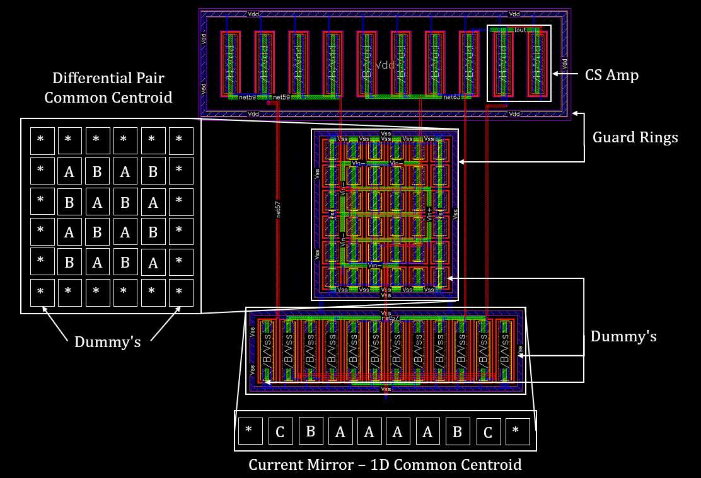

Variable Gain Amplifier

Skills: Cadence Virtuoso,
This project was the final coursework for my Full-Custom IC Design Module. The task was to design and layout the assigned topology.
Using the following Test Bench, the design was characterised.
Typical Characteristics/Results/Graphs
A compact layout was achieved by arranging the components in rectangular manner. To reduce mismatch and process issues the differential pair was arranged in a tiled common centroid with surrounding dummy transistors and a PTap guard ring. The NMOS current mirrors were arranged in a one dimensional common centroid as the odd ratio of transistors don't have an optimal two dimensional common centroid arrangement. Below is an annotated screenshot of the layout.
The layout Passed DRC and LVS with no errors.